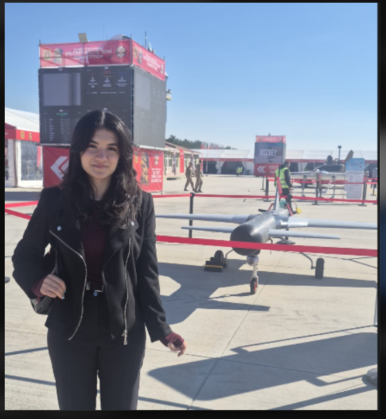
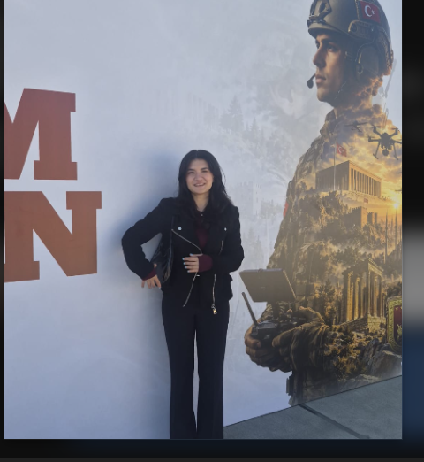
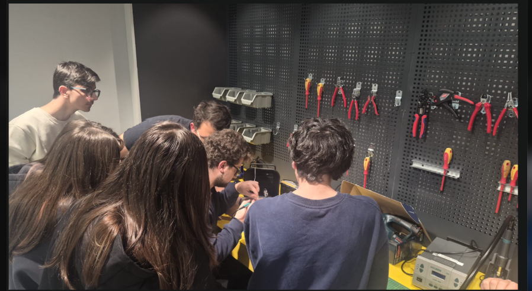
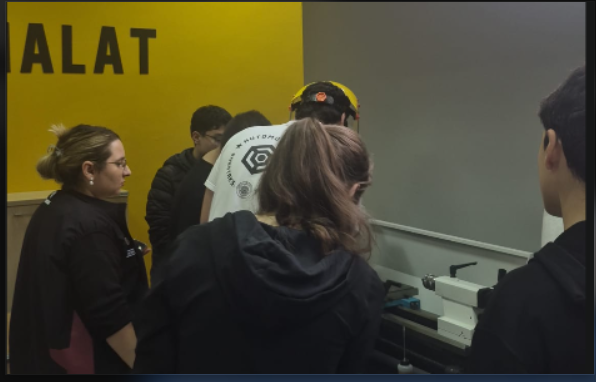
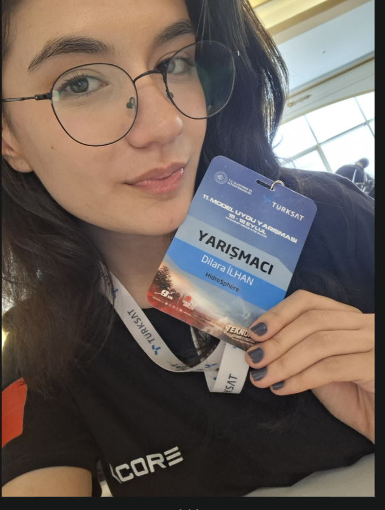
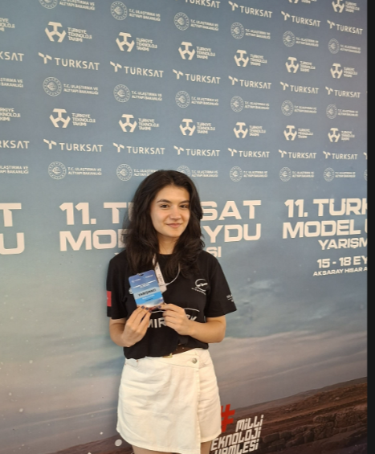
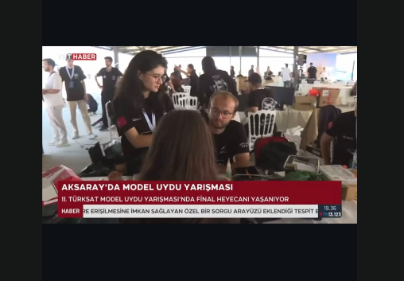
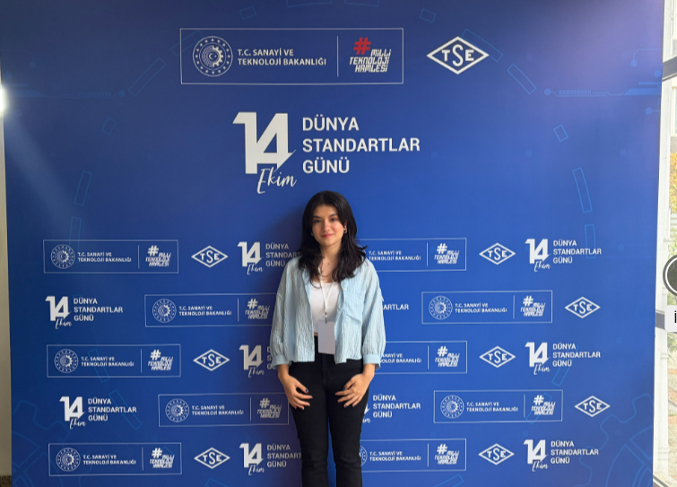

TSK · UÇANGÖZ
Drone yarışması deneyimim
Uçangöz yarışmasında drone sistemlerini ve yarışma ortamını yakından inceleme fırsatı buldum. Bu deneyim, insansız hava araçlarına olan ilgimi daha da artırdı.
Yarışmalar, ekip çalışmaları, atölye ziyaretleri ve unutamadığım anlar... Deneyimlerimi fotoğraflarla birlikte burada paylaşıyorum.
TSK Uçangöz etkinliği ve Millî Teknoloji Atölyesi'nden yeni fotoğraflarım.

Uçangöz yarışmasında drone sistemlerini ve yarışma ortamını yakından inceleme fırsatı buldum. Bu deneyim, insansız hava araçlarına olan ilgimi daha da artırdı.

Etkinlik sırasında farklı çalışmaların sergilendiği alanları gezdim. Yarışma atmosferini yerinde görmek benim için güzel bir deneyimdi.

MTA atölyesine gelen öğrencilere çalışma ortamımızı ve kullandığımız ekipmanları tanıttık. Birlikte yürütülen çalışmaları paylaşmak çok keyifliydi.

Ziyaret sırasında farklı çalışma alanlarını ve üretim ekipmanlarını birlikte gezdik. Atölyedeki uygulamaları ve çalışma ortamını yakından gösterdik.
Model uydu yarışması ve topluluk çalışmalarından önceki anılarım.

11. TÜRKSAT Model Uydu Yarışması'na Hidrosphere takımıyla katıldım. Bir projeyi yarışma ortamına taşımanın nasıl bir deneyim olduğunu gördüm.

Takım arkadaşlarımla hazırlık ve yarışma sürecini yaşamak, teknik çalışmalar kadar iletişimin de önemli olduğunu gösterdi.

Model uydu yarışmasındaki görüntüler bir televizyon haberine de yansıdı.

CORE topluluğunun çalışmaları kapsamında Dünya Standartlar Günü etkinliğine katılmak benim için ayrı bir deneyimdi.